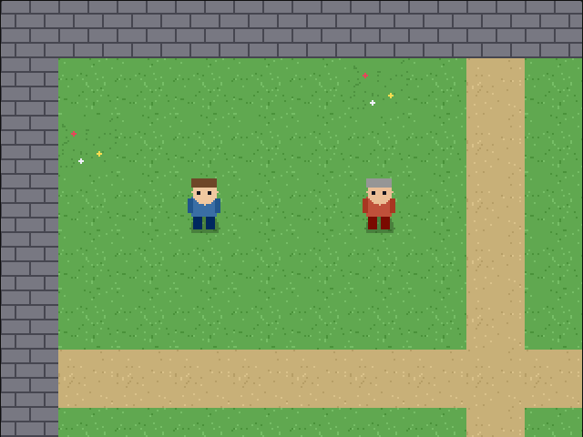
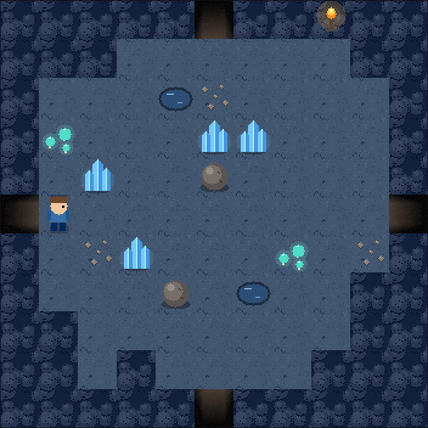
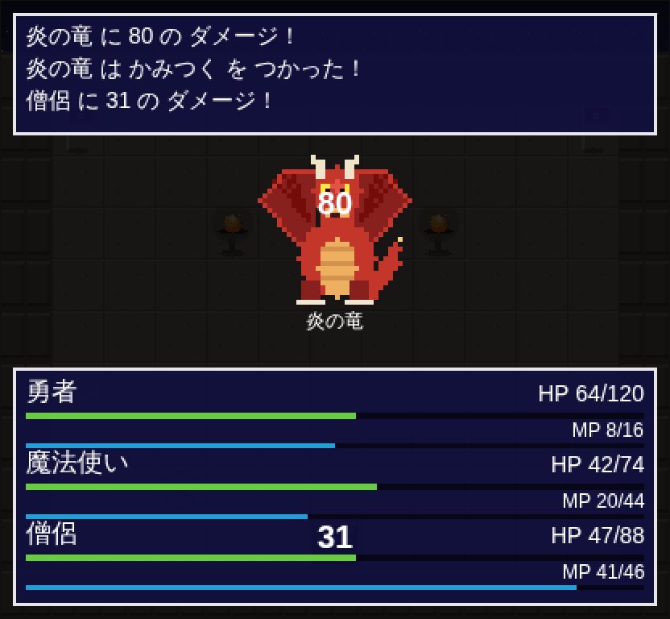
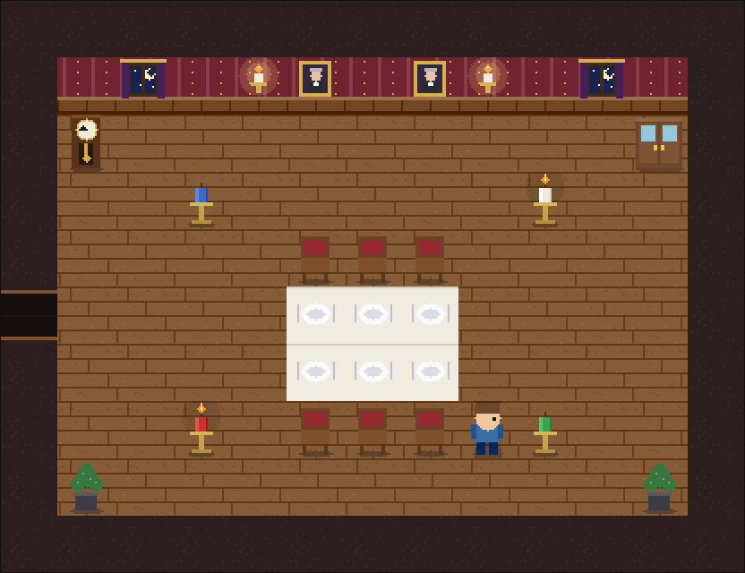
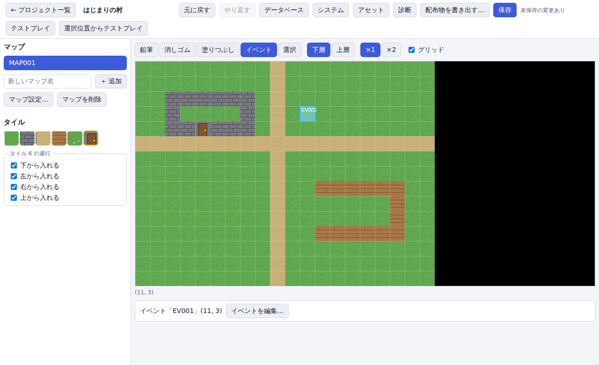

デモ
同梱のサンプルゲームです。デモの一覧から選んで遊べます。
-

はじまりの村：村を歩いて、話しかけて、スライムと戦う。ネコとヒヨコも歩いています -

地下迷宮：20 の洞窟の間を抜けて出口の光を目指す迷路。道を間違えるとループしたり、入口の方へ押し戻されたり -

バトルタワー：各階の番人を倒して屋上の炎の竜に挑む。毒・眠り・全体魔法、仲間になる僧侶の回復と蘇生 -

謎解きの館：閉じこめられた館から脱出する。なぞなぞ、ろうそくの順番、金庫の番号、鍵選び。戦闘のない、イベントだけで作ったゲーム -

エディタ：タイルを描き、イベントを置き、そのままテストプレイ
できること
マップとイベントの編集
タイル描画、塗りつぶし、レイヤ、イベント配置。イベントのコマンドは選択肢・移動ルート・画面効果・ショップまで揃っています。
データベース
アクター、職業、スキル、アイテム、敵、敵グループ、コモンイベント。参照切れは診断で知らせます。
ターン制戦闘
攻撃・スキル・アイテム・防御・逃走、状態異常、敵 AI、経験値とドロップ。
テストプレイとセーブ
編集中のゲームをその場で遊べます。プレイヤーはセーブ/ロードに対応し、キーボード・ゲームパッド・タッチで操作できます。
配布
フォルダ形式（Service Worker でオフラインも可）と、アセットを埋め込んだ単一 HTML。書き出しはエディタのボタンひとつです。
プラグイン
独自コマンド、式の関数、戦闘ルール、HUD などを追加できます。描画は WebGL と Canvas2D を選べます。
あそびかた
| 移動 | ↑ ↓ ← → / W A S D |
|---|---|
| 決定・話しかける | Enter / Z / Space |
| キャンセル | Esc / X |
| メニュー | M |
保存先について
エディタで作ったゲームは、あなたのブラウザの中（IndexedDB）に保存されます。サーバには何も送りません。フォルダを選んで、そこに保存することもできます。ブラウザのデータを消すと、ブラウザ内のゲームも消えるので、大事なものは書き出しておいてください。